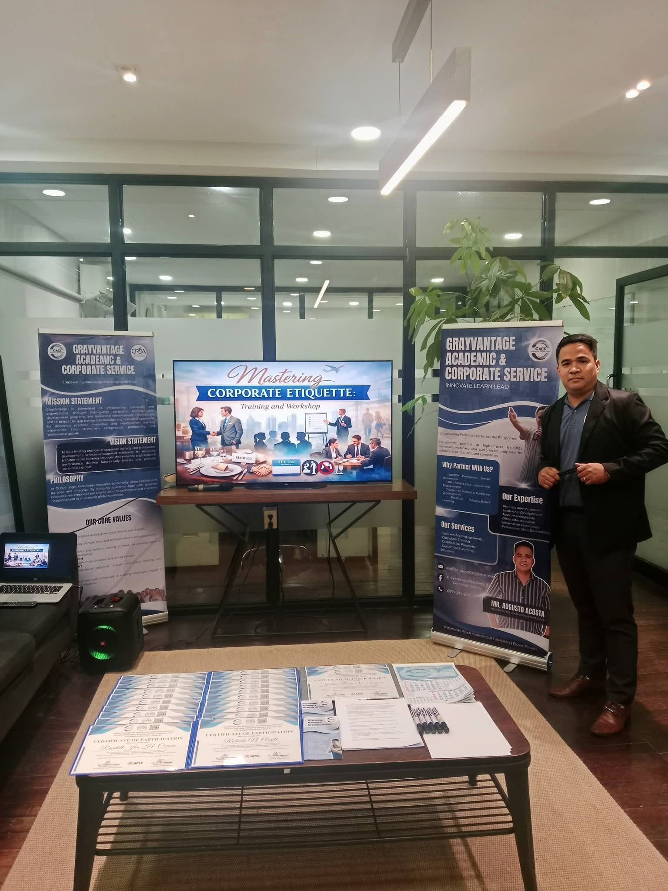

Meet Our Founder
The visionary behind GrayVantage Academic & Corporate Services

Mr. Augusto M. Acosta
Founder & Lead Consultant, GACSMr. Augusto M. Acosta is the visionary founder of GrayVantage Academic & Corporate Services. He possesses a strong dual background in corporate management, education, and instructional training, making him uniquely qualified to bridge the gap between industry needs and academic excellence.
Corporate Experience:
Mr. Acosta served as a Manager at Jollibee Foods Corporation (Franchise Store) for nearly seven years. In this role, he managed Operations, Marketing, Delivery, and Cleanliness & Sanitation, while also serving as a Food Safety Leader.
Academic & Training Background:
He is a passionate educator, teaching business-related subjects as a College Instructor at higher education institutions, as well as a Senior High School Teacher. Leveraging his real-world corporate expertise and teaching experience, he established GrayVantage to deliver high-impact webinars, seminars, and training programs aimed at empowering students, professionals, and organizations nationwide.
Corporate Experience
Nearly 7 years as Manager at Jollibee Foods Corporation, managing Operations, Marketing, Delivery, and Food Safety.
Academic Background
Passionate educator teaching business subjects as a College Instructor and Senior High School Teacher.
Vision & Mission
Founded GrayVantage to bridge industry and academia, empowering professionals nationwide through practical training.
Connect With Our Founder
Looking for specific training programs, consulting services, or want to connect with Mr. Acosta?
Get in Touch →